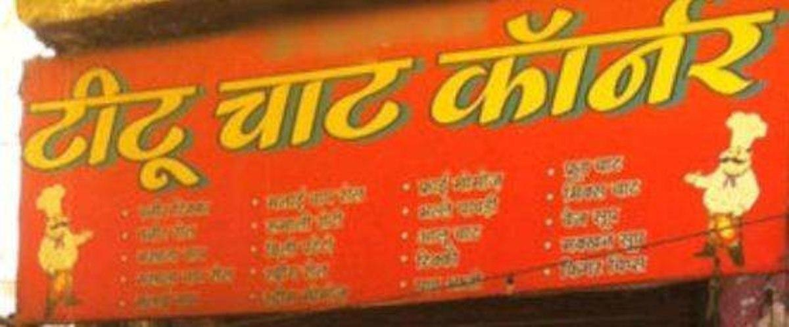

A food restaurant is a business establishment that serves prepared food to customers in exchange for payment. Restaurants can range from casual, take-out establishments to formal, sit-down establishments that offer table service. Some popular types of restaurants include fast food, casual dining, fine dining, and ethnic restaurants. Some key elements of a food restaurant include menu items, pricing, atmosphere, and customer service. Some examples of popular food restaurants are McDonald's, Olive Garden, and The Cheesecake Factory.
